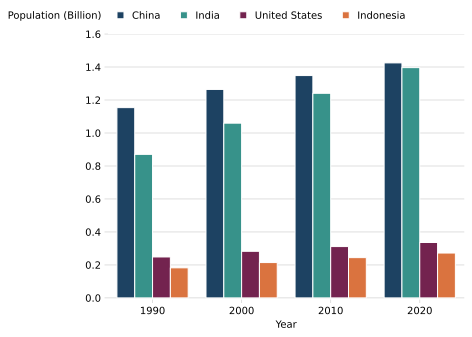
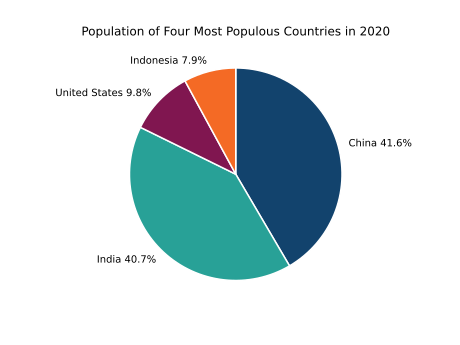
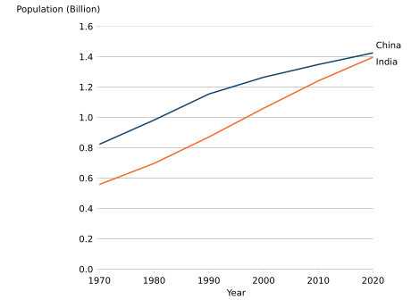
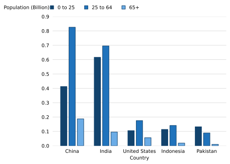
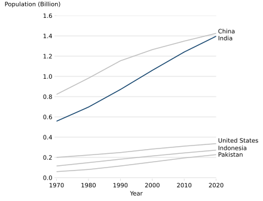

from py_af_colours import af_colourspy_af_colours
py_af_colours aims to support the creation of accessible python graphs across the UK Government Analysis Function by bringing the accessble colour palettes to creators. The colour palettes have been designed to support visually impaired people interpret data visualisations by featuring distinct colours with suitable contrasts.
The examples in these docs include other best practices for creating accessible graphs, with the full guidance available on the Analysis Function website.
The data used throughout these examples is provided in the required format on the py_af_colours repository.
Requirements
To use py_af_colours, your system requires the following:
- Python 3
- the
PyYAMLpackage - the py_af_colours package
Installing py_af_colours
py_af_colours is on PyPI. To install it:
- Open a python terminal, such as Anaconda shell
- Run:
pip install py_af_coloursGetting the colours
Import the af_colours function:
The af_colours function takes four arguments: palette, colour_format, number_of_colours, and config_path.
paletteis a required parameter, chosen by the user based on the Analysis Function colour guidance. It takes one of four possible string values corresponding to the options:- “duo”
- “focus”
- “sequential”
- “categorical”
- “duo”
colour_formatis an optional parameter. It takes one of two possible string values:- “hex”; meaning hexadecimal colour code, for example #12436D. “hex” is the default value of colour_format if none is specified.
- “rgb”; meaning red green blue colour code, for example (18, 67, 109).
number_of_coloursis an optional parameter for the categorical palette. It takes an integer value up to 6.config_pathis an optional parameter that links to where the palette values are stored. It is not recommended for the user to specify a value for this parameter (see Basic usage). It may be needed if the user moves the config file, or if they require custom values stored elsewhere.
af_colours() returns hex codes as a list of strings, and rgb codes as a list of tuples.
Basic usage
To return the duo colour palette hex codes:
af_colours("duo")['#12436D', '#F46A25']To return a five colour categorical palette as rgb codes:
af_colours("categorical", "rgb", 5)C:\Users\rosetg\AppData\Local\Temp\ipykernel_13232\4202599074.py:1: UserWarning: It is best practice to limit graphs to four categories where possible to avoid graphs becoming cluttered.
af_colours("categorical", "rgb", 5)[(18, 67, 109), (40, 161, 151), (128, 22, 80), (244, 106, 37), (61, 61, 61)]See also that warnings are given to highlight other accessibility best practice - in this case, to avoid graphs becoming cluttered.
This lists can be specified as values for colour parameters with graphing packages such as plotly and seaborn.
Examples in graphs
Categorical
This palette is for data which can be divided into groups or categories by using names or labels.
| Colour name | Hex code | RGB code | Colour fill |
|---|---|---|---|
| Dark blue | #12436D | (18, 67, 109) | |
| Turquoise | #28A197 | (40, 161, 151) | |
| Dark pink | #801650 | (128, 22, 80) | |
| Orange | #F46A25 | (244, 106, 37) | |
| Dark grey | #3D3D3D | (61, 61, 61) | |
| Light purple | #A285D1 | (162, 133, 209) |
Figure 1: Bar chart using the Categorical colour palette

This clustered bar chart uses data based on the world population dataset. Each cluster corresponds to a year. Each of the four bars within each cluster represent a country, denoted a distinct colour. The bars are outlined in white to aid with contrast between the bars, with additional whitespace between the clusters. The legend is presented in the same order as the bars in the clusters.
import pandas as pd
import seaborn as sns
import matplotlib.pyplot as plt
from py_af_colours import af_colours
world_population = pd.read_csv("data\world_population_in_billions.csv")
top_four = world_population[0:4]
top_four_data = top_four.set_index("Country/Territory")
years_of_interest = top_four_data.columns.tolist()[-4:]
categorical = sns.color_palette(af_colours("categorical", "hex", 4))
population_over_time = pd.melt(top_four_data.reset_index(),
id_vars = "Country/Territory",
value_vars = years_of_interest,
var_name = "Year",
value_name = "Population")
fig, ax = plt.subplots()
sns.barplot(x = "Year", y = "Population",
data = population_over_time,
zorder = 2, hue = "Country/Territory",
edgecolor = "white",
palette = categorical)
plt.box(False)
ax.set_ylabel("Population (Billion)", rotation = 0)
ax.yaxis.set_label_coords(-0.15, 1.05)
plt.grid(visible = True, which = "both", axis = "y", color = "#D6D6D6")
ax.tick_params(color = "#D6D6D6")
ax.set_ylim(bottom = -0.01, top = 1.6)
plt.legend(frameon = False, loc = "upper left", ncol = 4,
handlelength = 0.7, bbox_to_anchor = (0, 0.62, 0.5, 0.5))
plt.show()Figure 2: Pie chart using the Categorical colour palette

This a pie chart showing the proportional populations of the four most populous countries. Each country is represented by a distinct colour. Each slice is outlined in white, and labelled with a sans serif font in black. This data is from the world population dataset.
import pandas as pd
import seaborn as sns
import numpy as np
import matplotlib.pyplot as plt
from py_af_colours import af_colours
world_population = pd.read_csv("data\world_population_in_billions.csv")
top_four = world_population[0:4]
top_four_data =top_four.set_index("Country/Territory")
most_recent = top_four_data.iloc[:,-1:]
data = most_recent.reset_index()
countries = top_four["Country/Territory"].values
colours_list = af_colours("categorical", "hex", 4)
categorical = sns.color_palette(colours_list)
percentage_labels = []
for n in np.arange(most_recent.shape[0]):
percentage = 100 * ((most_recent.iloc[n].values.item())
/(most_recent.values.sum().item()))
value = round(percentage, 1)
country = str(data["Country/Territory"].iloc[n])
percentage_labels.append((country + " " + str(value) + "%"))
ax = most_recent.plot.pie(x = "Country/Territory", y = "2022",
labels = percentage_labels,
legend = False,
colors = categorical,
pctdistance = 1,
counterclock = False,
startangle = 90,
wedgeprops = {"edgecolor": "white",
"linewidth": 1.5,
"antialiased": True})
ax.set_ylabel(None)
ax.set_title("Population of Four Most Populous Countries in 2022")
plt.show()Duo
This palette is for categorical data when there are two categories.
| Colour name | Hex code | RGB code | Colour fill |
|---|---|---|---|
| Dark blue | #12436D | (18, 67, 109) | |
| Orange | #F46A25 | (244, 106, 37) |
Figure 3: Line chart using the Duo colour palette

This line chart has two lines, one dark blue and one orange. Each is labelled with black text in a sans serif font. This line chart uses data based on the world population dataset.
import pandas as pd
import seaborn as sns
import matplotlib.pyplot as plt
from py_af_colours import af_colours
world_population = pd.read_csv("data\world_population_in_billions.csv")
top_two_data = world_population.set_index("Country/Territory")[0:2]
duo = sns.color_palette(af_colours("duo"))
fig, ax = plt.subplots()
sns.lineplot(data = (top_two_data.transpose()),
palette = duo,
dashes = False,
legend = False)
ax.set_xlabel("Year")
ax.set_ylabel("Population (Billion)", rotation = 0)
ax.yaxis.set_label_coords(-0.15, 1.05)
ax.grid(visible = True, which = "both", axis = "y", color = "#BEBEBE")
ax.set_axisbelow(True)
ax.set_frame_on(False)
ax.tick_params(color = "#D6D6D6")
x_label_coord = len(top_two_data.columns) - 1
y_label_coord1 = top_two_data.values[0][-1] + 0.03
y_label_coord2 = top_two_data.values[1][-1] - 0.05
ax.annotate(" China", xy = (x_label_coord, y_label_coord1))
ax.annotate(" India", xy = (x_label_coord, y_label_coord2))
ax.set_xlim(left = 0, right = len(top_two_data.columns) - 1)
ax.set_ylim(bottom = -0.01, top = 1.6)
plt.tight_layout()
plt.show()Sequential
This palette is for data where the order of the data is meaningful, such as for age groups.
| Colour name | Hex code | RGB code | Colour fill |
|---|---|---|---|
| Dark blue | #12436D | (18, 67, 109) | |
| Mid blue | #2073BC | (32, 115, 188) | |
| Light blue | #6BACE6 | (107, 172, 230) |
Figure 4: Bar chart using the Sequential colour palette

This clustered bar chart uses data based on the population by age dataset and shows the population of three age groups for five countries. Each country is labelled along the x axis. The bars within each cluster use the gradient of the sequential palette to follow the order of age bars going from young to older. The legend is presented at the top left of the graph in the same order as the age-group bars in the bar clusters. Each bar has a dark blue border and white space in between.
Distinct from previous examples, this example shows how to use an rgb list returned by af_colours. It is generally easier to use hex codes, but this example is included for completeness. The end result is the same as using hex codes.
import numpy as np
import pandas as pd
import seaborn as sns
import matplotlib.pyplot as plt
from py_af_colours import af_colours
world_population_by_age = pd.read_csv("data\population_by_age.csv")
top_five_age = world_population_by_age[0:5]
top_five_age_data = top_five_age.set_index(top_five_age["Country"])
countries = top_five_age["Country"].values
fig, ax = plt.subplots()
x_spacing = np.arange(top_five_age.shape[0])
colours = af_colours("sequential", "rgb")
sequential = [tuple(t / 255 for t in x) for x in colours]
plt.bar(x_spacing - 0.25, top_five_age["Under 25"].values,
width = 0.19, zorder = 2, edgecolor = sequential[0],
label = "0 to 25", color = sequential[0])
plt.bar(x_spacing, top_five_age["25-64 years"].values,
width = 0.19, zorder = 2, edgecolor = sequential[0],
label = "25 to 64", color=sequential[1])
plt.bar(x_spacing + 0.25, top_five_age["65+"].values,
width = 0.19, zorder = 2, edgecolor = sequential[0],
label = "65+", color = sequential[2])
plt.box(False)
plt.grid(visible = True, which = "both", axis = "y", color = "#D6D6D6")
plt.xticks(x_spacing, top_five_age["Country"].values)
plt.tick_params(color = "white")
ax.set_xlabel("Country")
ax.set_ylabel("Population (Billion)", rotation = 0)
ax.yaxis.set_label_coords(-0.15, 1.05)
ax.set_ylim(top = 0.9)
plt.legend(bbox_to_anchor = (0.025, 0.62, 0.5, 0.5), ncol = 4,
handlelength = 0.7, frameon = False)
plt.show()Focus
This palette should be used when you want to highlight specific elements to help users understand the information.
| Colour name | Hex code | RGB code | Colour fill |
|---|---|---|---|
| Dark blue | #12436D | (18, 67, 109) | |
| Grey | #BFBFBF | (191, 191, 191) |
Figure 5: Line chart using the Focus colour palette

This line chart uses data based on the world population dataset. It shows the change in population of various countries over time as five lines, of which four are a uniform light grey, and one is a dark blue, serving to highlight the data.
import pandas as pd
import numpy as np
import seaborn as sns
import matplotlib.pyplot as plt
from py_af_colours import af_colours
world_population = pd.read_csv("data\world_population_in_billions.csv")
top_five = world_population[0:5]
top_five_data = top_five.set_index("Country/Territory")
focus_country = "India"
focus_colours = af_colours("focus")
focus_index = top_five.index[top_five["Country/Territory"]
== focus_country].tolist()
focus_palette = int(top_five_data.shape[0]) * [focus_colours[1]]
focus_palette[focus_index[0]] = focus_colours[0]
focus = sns.color_palette(focus_palette)
fig, ax = plt.subplots()
sns.lineplot(data = top_five_data.transpose(),
palette = focus,
dashes = False,
legend = False)
ax.set_xlabel("Year")
ax.set_ylabel("Population (Billion)", rotation = 0)
ax.yaxis.set_label_coords(-0.15, 1.05)
ax.grid(visible = True, which = "both", axis = "y", color = "#D6D6D6")
ax.set_axisbelow(True)
ax.set_frame_on(False)
ax.tick_params(color = "#D6D6D6")
x_coord = len(top_five.columns) - 2
y_coord = []
for n in np.arange(top_five_data.shape[0]):
y = top_five_data.values[n][-1]
y_coord.append(y)
ax.annotate(" China", xy = (x_coord, y_coord[0]))
ax.annotate(" India", xy = (x_coord, y_coord[1] - 0.04))
ax.annotate(" United States", xy = (x_coord, y_coord[2] + 0.01))
ax.annotate(" Indonesia", xy = (x_coord, y_coord[3]))
ax.annotate(" Pakistan", xy = (x_coord, y_coord[4] - 0.02))
ax.set_xlim(left = 0, right = (len(top_five.columns) - 2))
ax.set_ylim(bottom = -0.01, top = 1.6)
plt.tight_layout()
plt.show()Maintenance
In the event of future updates to the colours, they will be updated in the config file.
This page will undergo changes as the package is updated.